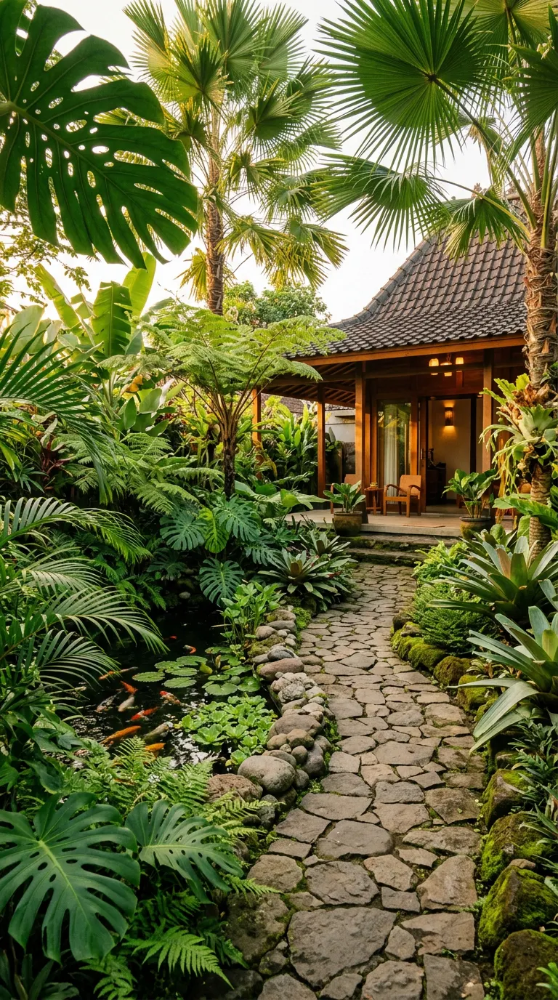
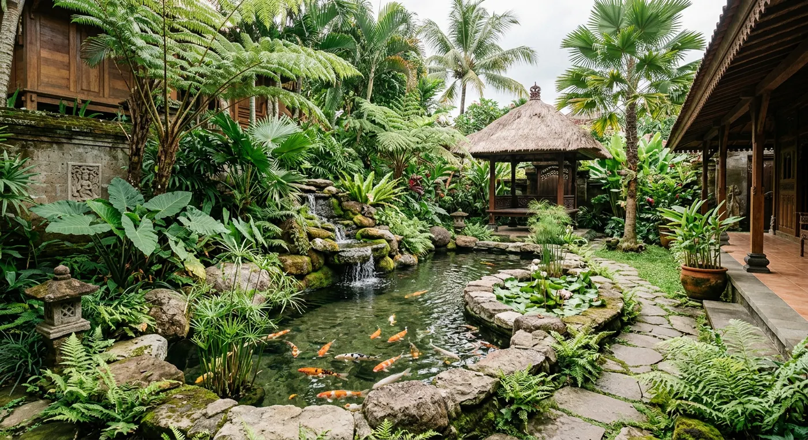
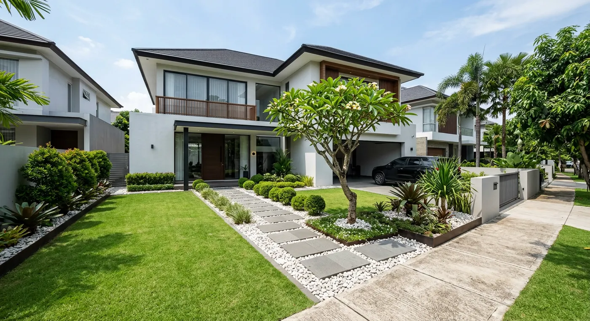
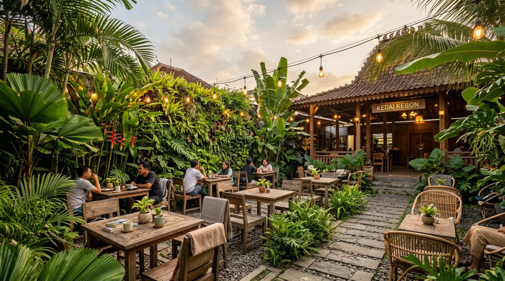

Nursery & Lanskap sejak 2014
Hadirkan alam ke setiap sudut rumah Anda.
Tanaman hias segar dari kebun kami sendiri, serta jasa desain & pembuatan taman profesional untuk Sleman, Bantul, dan Kota Yogyakarta.
- Jumlah spesies
- 300+
- Spesies tanaman
- Proyek selesai
- 180+
- Proyek taman
- Rating pelanggan
- 4.9/5
- Ulasan Google

Antar & garansi tanaman
Seluruh area DIY
Survei
Gratis
Katalog Tanaman
Koleksi favorit dari kebun kami
Sehat, segar, dan siap pajang. Setiap tanaman dirawat langsung di nursery kami di Sleman.
Jasa Pembuatan Taman
Dirancang oleh arsitek lanskap, dikerjakan tim sendiri.
Dari halaman rumah perumahan hingga villa, kafe, dan kantor di DI Yogyakarta, setiap proyek kami tangani dari konsep hingga perawatan.
Cara kami bekerja
Simulasi Biaya
Hitung estimasi biaya taman Anda
Perkiraan awal sebelum survei lokasi. Harga final menyesuaikan kondisi lahan.
m²
5 m²50 m²100 m²
Perkiraan biaya total
m² ·
- Rumput & tanah urug
- Tanaman hias & batu koral
- Jasa pengerjaan & garansi
Portofolio
Hasil karya kami di Jogja



Testimoni
Kata mereka tentang Asri Flora
FAQ
Pertanyaan yang sering diajukan
Tidak menemukan jawaban? Tim kami siap membantu lewat WhatsApp.
Tanya LangsungLokasi Showroom
Kunjungi kebun kami di Sleman
Pilih tanaman langsung di kebun pamer kami, atau diskusikan rencana taman Anda bersama tim arsitek lanskap kami.
- Alamat
- Kantor & Nursery Jl. Kaliurang KM 7.5, Kayen, Condongcatur, Depok, Sleman, DI Yogyakarta 55283
- Jam buka
- Buka setiap hari Senin - Minggu, 07.30 - 17.00 WIB
- WhatsApp +62 857-8609-8459
Siap mempercantik rumah Anda?
Pesan tanaman hias pilihan atau jadwalkan survei taman gratis ke rumah Anda hari ini.
Hubungi via WhatsApp